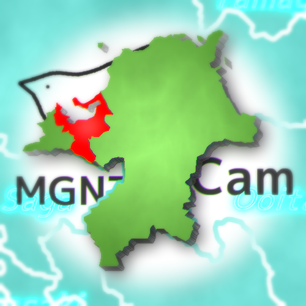

FukuokaMGNTCamホームページ
FukuokaMGNTCam

福岡県福岡市で地震観測をしております。C#でアプリケーションを作るのが趣味です。
X(旧Twitter)とYoutubeとDiscord以外には触りません。(普通に嫌)
今年2023年度はMGNTの受験シーズンですので、浮上率は減ると思います。その分頑張るでし。
福岡県福岡市で地震観測をしております。C#でアプリケーションを作るのが趣味です。
X(旧Twitter)とYoutubeとDiscord以外には触りません。(普通に嫌)
今年2023年度はMGNTの受験シーズンですので、浮上率は減ると思います。その分頑張るでし。